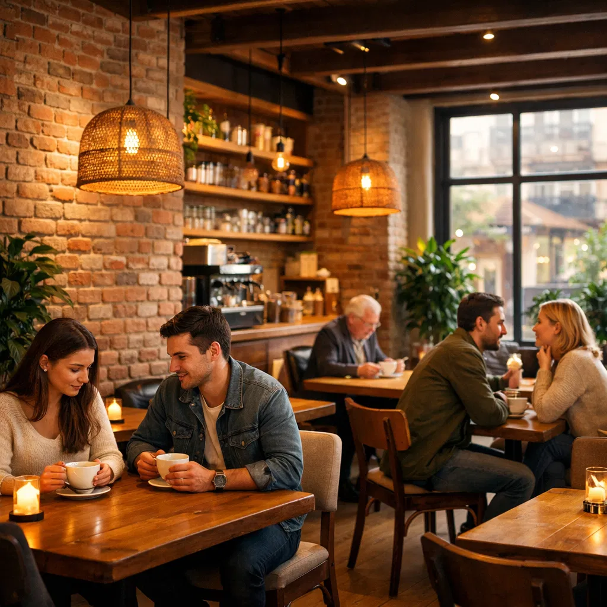
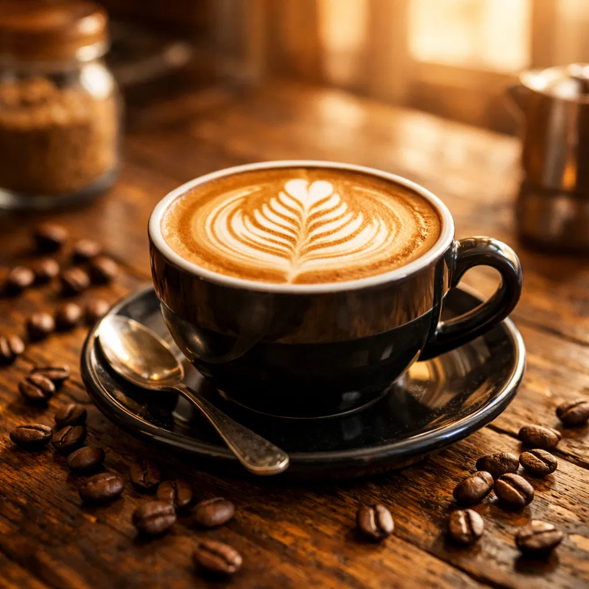

Grãos selecionados do mundo todo, torrados na hora
Conheça Nosso Menu
Bem-vindo ao Café Aroma & Grão, um espaço dedicado aos apaixonados por café de verdade. Desde 2015, selecionamos pessoalmente os melhores grãos de café de diferentes regiões do mundo, garantindo qualidade, frescor e sabor incomparável em cada xícara.
Nossa missão é criar uma experiência única, onde cada cliente possa desfrutar de um café preparado com técnica, paixão e dedicação. Visite-nos e descubra por que somos referência em café artesanal na cidade.

"O melhor café que já tomei! O ambiente é aconchegante e os baristas são muito atenciosos."
"Qualidade excepcional em cada xícara. Voltei para cá todo dia desde que descobri o lugar!"
"Recomendo para todos os amigos. O café é fresco, saboroso e preparado com muito cuidado."
Rua do Café, 123 - Centro
São Paulo, SP - 01234-567
(11) 3456-7890
contato@aromaegrao.com.br
Segunda a Sexta: 7h - 20h
Sábado: 8h - 18h
Domingo: Fechado